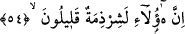
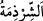
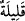
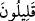
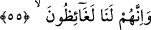
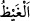

53. Fir’avn da şehirlere (asker) toplayıcılar gönderdi:
“Fir’avn da” onların geceleyin yola çıkacağını haber alınca, payitahta yakın olan
“şehirlere” onları tâkip etmeleri için “(asker) toplayıcılar gönderdi:”
Kâşifî der ki: “Son gün İsrailoğulları’nın çıkış/ayrılış haberi Kıptîlere ulaştı. Onlar
İsrailoğulları’nın evlerinde kalma sebebinin bayram hazırlığı olduğunu zannediyorlardı.
İkinci gün arkalarından süratli bir şekilde gitmeyi istediler. Kıbtî evlerinden birinde,
kavmin seçkinlerinden biri öldü; onun taziyesiyle meşgul oldular. O gün Fir’avn
ordunun toplatılmasını emretti.”
Keşfü’l-esrâr da ise şöyle der: “Pazar günü sabahında Kıptîler onu defnetmekle
meşgul iken Fir’avn’un emriyle bütün asker ve hizmetkârları toplandı. Ertesi Pazartesi
günü İsrailoğulları’nın peşine düştüler.”
54. “Esasen bunlar, sayıları az, bölük pörçük bir cemaattır.”
Fir’avn, şehirlerin askerleri gelip toplanınca İsrâiloğulları’nı kasdederek şöyle dedi:
“Esasen bunlar, sayıları az, bölük pörçük bir cemaattır” Az bir topluluktur.
İsrâiloğulları altı yüz yetmiş bin kişi olduğu halde kendi askerlerine nisbetle onları
azımsadı. Çünkü Fir’avn âilesi/taraftarları sayılamayacak kadar çoktu. et-Tekmile’de
der ki: “Fir’avn İsrâiloğulları’nı kısraklar hariç bir milyon at ile takip etmiştir.
Ordusunun öncü birliği yedi yüz bindi.
“__WORD__ küçük grup, demektir. “__WORD__ değil de “__WORD__ denilmesi yahûdilerin herbiri
küçük bir kabîleden meydana gelen kabîleler olması bakımındandır.
55. “(Böyle iken) kesinkes bizi öfkelendirmişlerdir.”
“(Böyle iken) kesinkes bizi öfkelendirmişlerdir.” Öfke ve gazaba sebep olmuşlardır.
“__WORD__, gazab ve öfkenin daha şiddetlisidir. Öfke, kalpteki kanın köpürüp
hareketlenmesinden dolayı insanın hissettiği harârettir. Âyetin mânâsı ise şöyledir:
Onlar dinimize muhâlefet ederek, bu gece bayramları olduğunu bahane ederek ödünç
aldıkları mallarımızı alıp götürerek ve iznimiz olmadan topraklarımızdan çıkıp giderek
bizi öfkelendirecek ve kızdıracak şeyler yapmaktadırlar. Halbuki onlar bizim
kullarımıza dâhildirler.